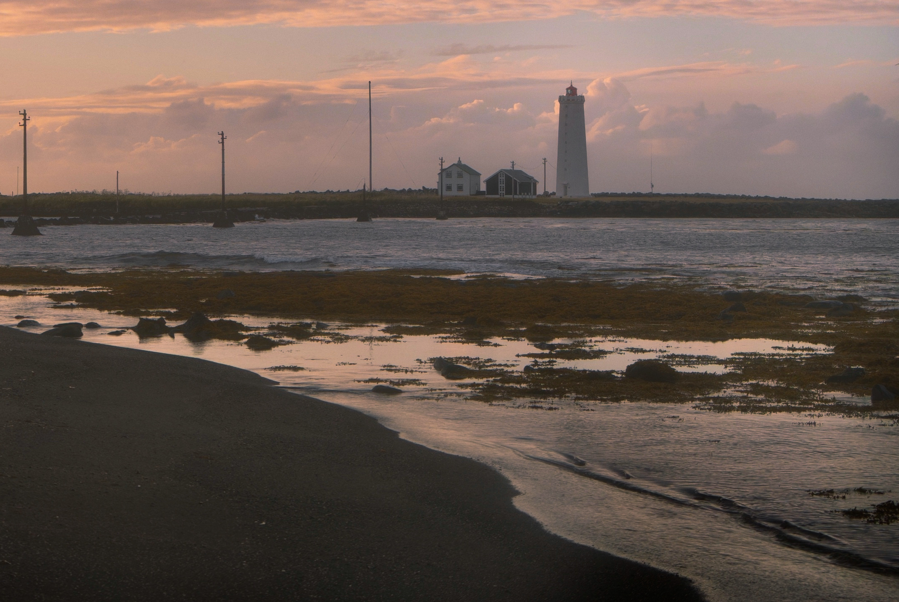
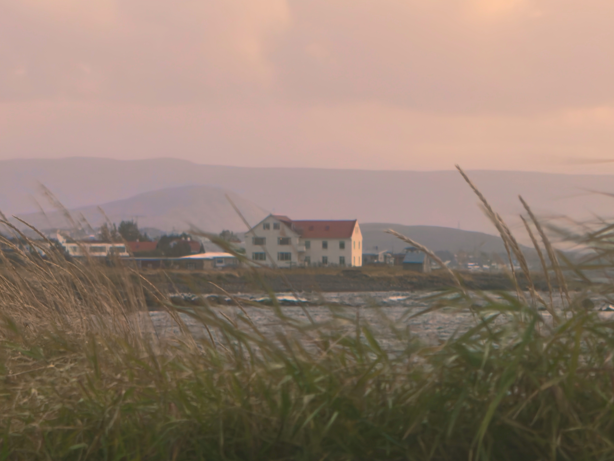
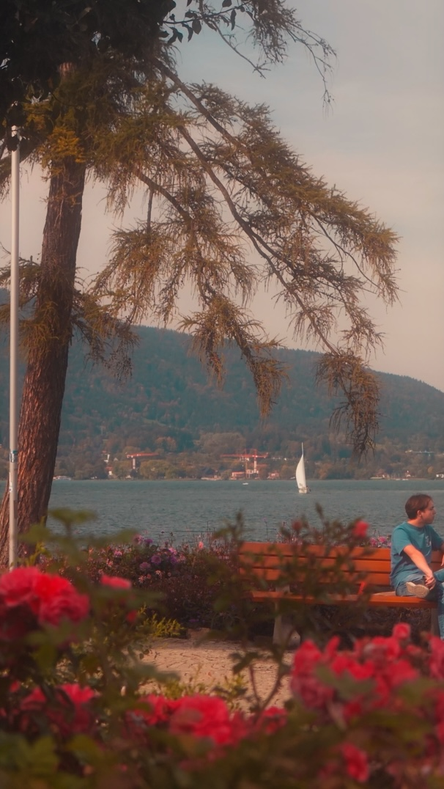
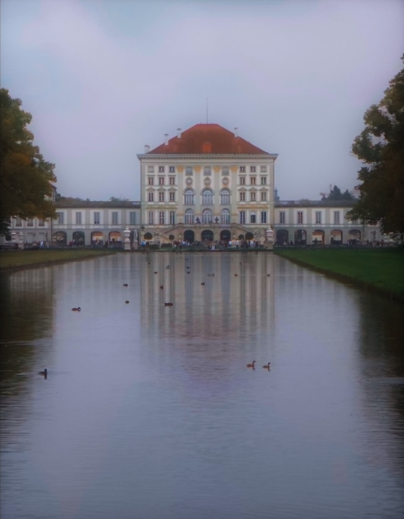
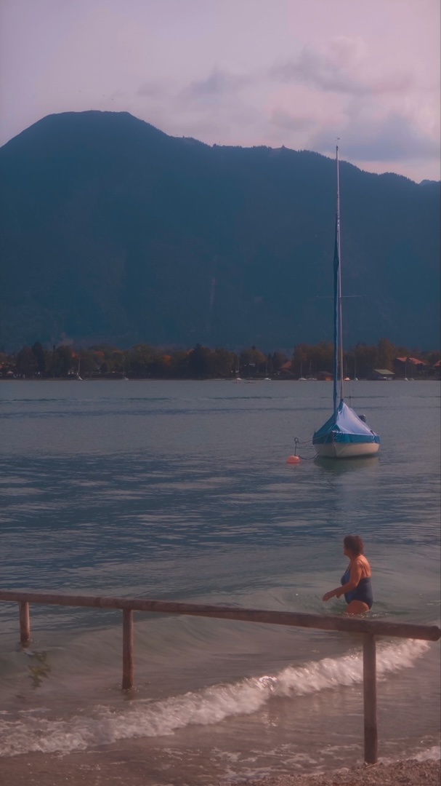
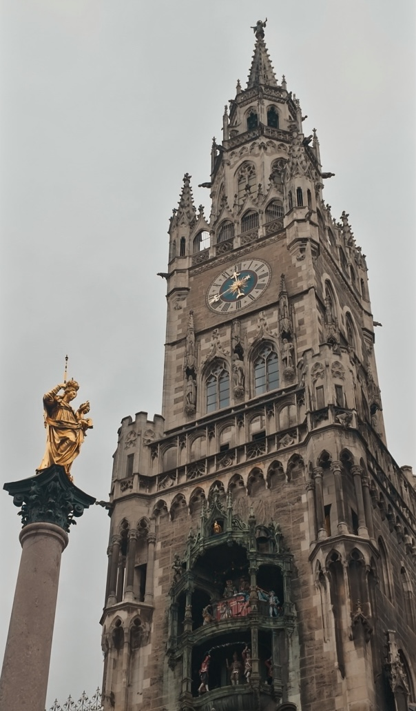
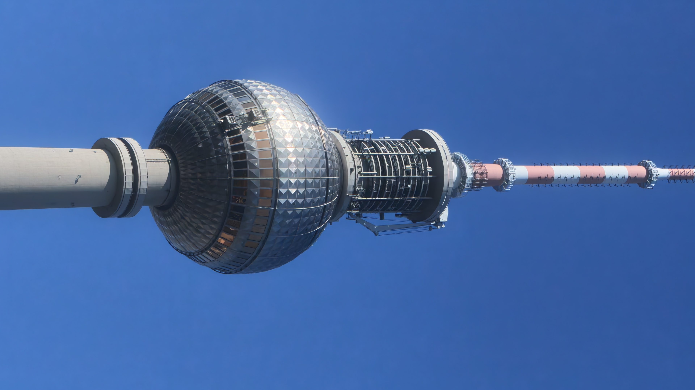
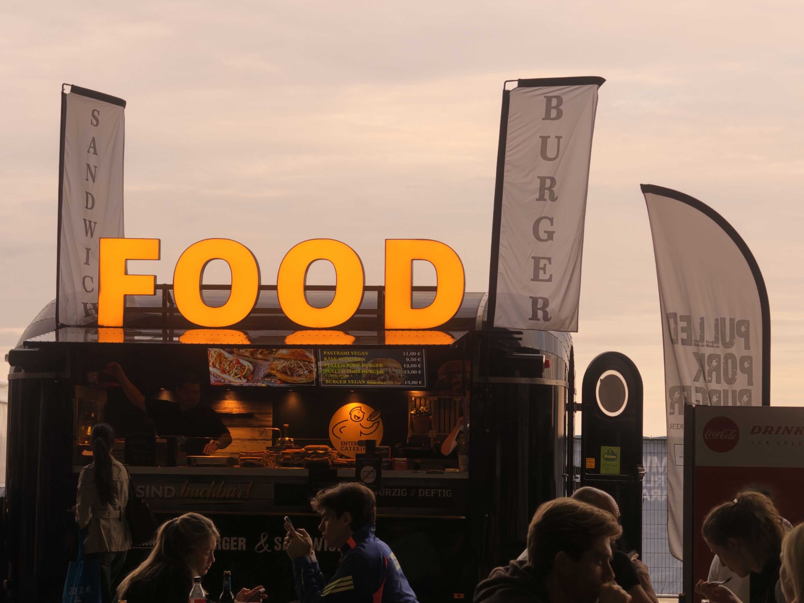
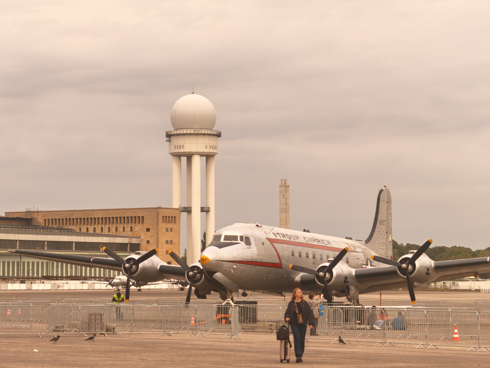
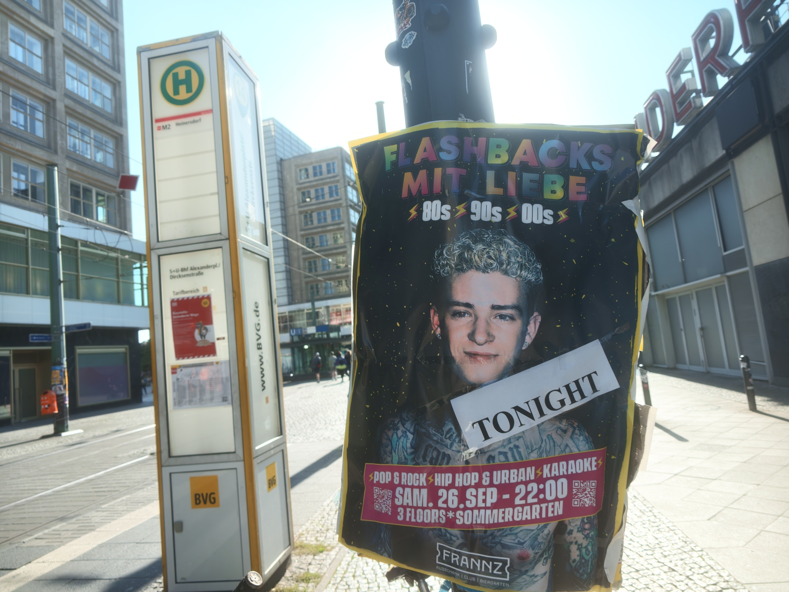

Travel & landscape film
Tegernsee
REYKJAVÍK, ICELAND · PHOTO & VIDEO
A collection of photographs and short films shaped by landscape, atmosphere, and the small details that make a moment unforgettable.
Explore the work
A FEW PLACES, A FEW MOMENTS
Travel, landscapes, architecture, and details.









MOVING IMAGES
Original footage, filming, editing, and colour grading.
Tegernsee
Berlin Marathon
A LITTLE ABOUT ME
I'm Avery, a Reykjavík-based aspiring photographer and filmmaker with a background in data science and experience in Iceland's tourism and hospitality industry.
I love capturing unique moments and finding ways to communicate the atmosphere of a place through thoughtful framing, natural light, movement, and colour. My independent projects are filmed, edited, and colour graded entirely by me, using a Luna Ultra camera and DaVinci Resolve.
I'm drawn to visual storytelling, travel, landscapes, and the experiences that connect people to a place.
LET'S CONNECT
Based in Reykjavík, Iceland